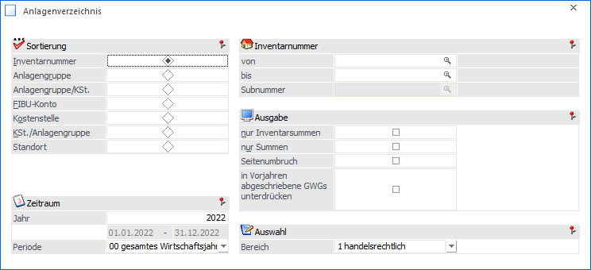
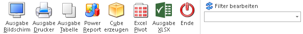
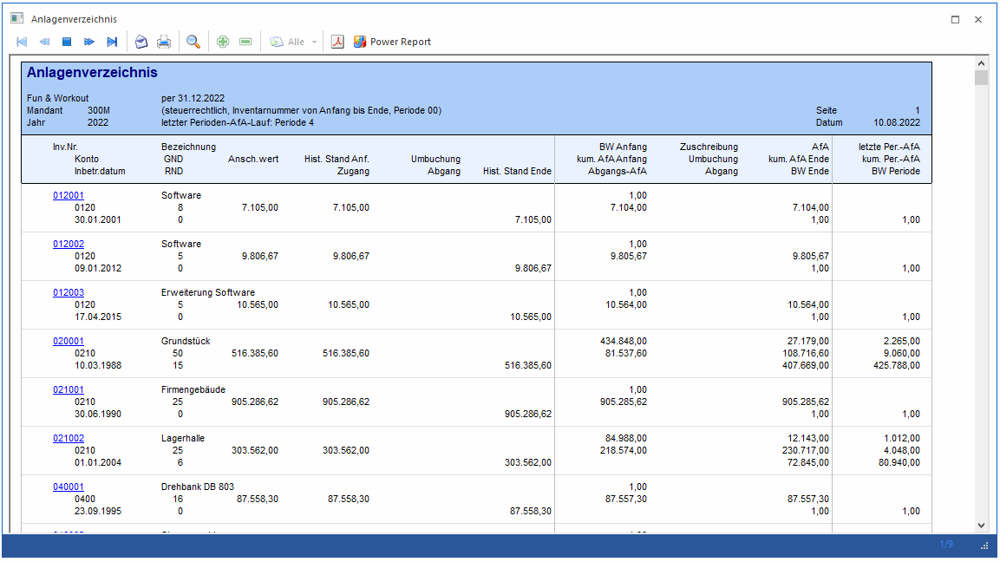

Sollen alle Anlagen auf einen Blick ersichtlich sein, rufen Sie einfach das Anlagenverzeichnis ab. Diese Auswertung kann sowohl am Bildschirm als auch über den Drucker oder als Tabelle ausgegeben werden.
Dazu gehen Sie in den Menüpunkt
1 Auswertungen
1 Anlagenverzeichnis
Dieser Programmpunkt kann auch mit der Tastenkombination
1 STRG + Z
aufgerufen werden.

Folgende Auswertekriterien können eingestellt werden:
Ø Sortierung
Es besteht die Möglichkeit eine Sortierung nach der…
ü Inventarnummer
ü Anlagengruppe (Anlagengruppe, der das Inventargut im Anlagenstamm zugeordnet wurde)
ü Anlagengruppe/KSt. (innerhalb der Anlagengruppe nach der Kostenstelle)
ü FIBU-Konto
ü Kostenstelle
ü KSt./Anlagengruppe (innerhalb der Kostenstelle nach der Gruppe)
ü Standort
… vorzunehmen.
Ø von - bis
Je nachdem, welches Sortierkriterium gewählt wurde, kann der Ausdruck durch die hier einzugebenden Grenzen eingeschränkt werden. Haben Sie nach der Anlagengruppe sortiert, druckt der Matchcode alle zur Verfügung stehenden Anlagengruppen an. Richtet sich die Sortierung nach dem FIBU-Konto, erhalten Sie über den Matchcode eine Übersicht aller in Frage kommenden FIBU-Konten. Das gleiche gilt für die Sortierung nach Kostenstellen (Kostenstelle von - bis) und nach der Inventarnummer (Inventarnummer von - bis). Für die Eingrenzung von - bis Standort steht eine Combobox mit den vorhandenen Standorten zur Verfügung.
Ø Subnummer
Wurde als Inventarnummer ein Hauptanlagegut eingetragen, zu welchem auch Subanlagen existieren, kann hier die Subanlagen-Nummer eingetragen oder über den Matchcode ausgewählt werden.
Ø nur Inventarsummen
Es werden pro Inventargut nur Summen ausgewiesen, d.h. sollte es Subanlagen dazu geben, werden diese NICHT angezeigt.
Ø nur Summen
Wird diese Checkbox aktiviert, werden im Anlagenverzeichnis nur Summenwerte angezeigt.
Ø Seitenumbruch
Durch Aktivierung der Checkbox erhalten Sie einen Seitenvorschub pro Sortierung, z.B. pro Gruppe.
Ø Checkbox "In Vorjahren abgeschriebene GWGs unterdrücken"
Ist diese Checkbox aktiviert, werden GWGs aus Vorjahren, die lt. Anlagenparameter auf einen Erinnerungswert von 0,00 abgeschriebenen wurden, auf dem Anlagenverzeichnis nicht ausgewiesen.
Ø Jahr
Hier geben Sie das Jahr ein, für das Sie das Anlagenverzeichnis ausgeben möchten. Aufgrund des immer zur Verfügung stehenden und für die gesamte Lebensdauer aller Anlagen gerechneten Anlagenjournals, kann jederzeit jedes beliebige Wirtschaftsjahr, das mit einer WinLine ab Version 8.0 abgeschrieben wurde, ausgewertet werden!
Ø Periode
In der Auswahllistbox können Sie den Abruf des Anlageverzeichnisses bis zu einer bestimmten Periode einschränken.
ü 00 gesamtes Wirtschaftsjahr
Sie
erhalten das Anlageverzeichnis des ganzen Wirtschaftsjahres. Es werden die Werte
aller durchgeführten Periodenabschreibungen ausgewiesen.
ü 01 bis 12 (pro Monatsperiode von
Jänner bis Dezember)
Mit einer Einschränkung auf eine bestimmte Periode
können Sie die Werte der Periodenabschreibung rückwirkend per Monatsende
abfragen.
Hinweis
Werden im Mandantenstamm die Perioden des Wirtschaftsjahres differenziert benannt, sind hier natürlich auch die spezifisch vorgegebenen Periodenbezeichnungen selektierbar.
Ø Bereich
Hier kann entschieden werden, ob im Anlagenverzeichnis die steuerrechtlichen oder handelsrechtlichen Werte ausgegeben werden sollen.
Automatisch vorgeschlagen wird das Abschreibungsverfahren, welches im ANBU-Parameter / Buchen für die Buchungsübergabe definiert ist.
Im Anlagenverzeichnis kann über einen mesonic.ini Eintrag die Auswahl des Bereichs "steuerrechtlich" oder "handelsrechtlich" erweitert werden um die Auswahl "steuerrechtlich (+ handelsrechtlich)" und "handelsrechtlich (+ steuerrechtlich)".
In diesen Fällen wird das jeweils andere Abschreibungsverfahren ebenfalls, jedoch andersfarbig, angedruckt.
Somit stehen steuerrechtliche und handelsrechtliche Werte der Anlagegüter für Prüfungszwecke direkt untereinander.
Für die zusätzliche Auswahl des Bereichs ist nachfolgender mesonic.ini Eintrag zu hinterlegen:
[ANBU]
FillComboSRHRMode=1
Buttons

Ø Ausgabe Bildschirm
Standardmäßig wird die Ausgabe auf dem Bildschirm vorgeschlagen, die auch durch Drücken der F5-Taste gestartet werden kann.
Ø Ausgabe Drucker
Das Anlagenverzeichnis wird am Drucker ausgegeben.
Ø Ausgabe Tabelle
Wenn die Option "Ausgabe Tabelle" gewählt wird, dann wird die Liste in einer Tabelle dargestellt. Die Tabelle hat die gleichen Funktionen wie Excel (z.B. Bilden von Summen) und kann auch als XLS-Datei exportiert werden (über rechte Maustaste, Exportiere Tabelle), wo die Daten dann auch weiterbearbeitet werden können.
Ø Power Report
Durch Drücken des Buttons "Power Report" wird die Auswertung auf Basis von Cube-Daten grafisch dargestellt. Die Ausgabe ist individuell anpassbar und erfolgt in der Form von "Widgets", die unterschiedlichsten Darstellungen ermöglichen.
Ø Cube erzeugen
Durch Anwahl des Buttons wird ein Cube erstellt und im Olap Viewer angezeigt.
Ø Excel Pivot
Durch Anwahl des Buttons wird das Anlagenverzeichnis in einer Excel-Pivot-Tabelle ausgegeben.
Ø Ausgabe XLSX
Mit Hilfe des Buttons "Ausgabe XLSX" wird die Auswertung mit den von Ihnen definierten Selektionen an Microsoft Excel übergeben.
Ø Ende
Das Fenster wird geschlossen, ohne dass eine Auswertung angezeigt wird.
Ø Filter bearbeiten
Wird der Filter-Button angeklickt, kann ein neuer Filter definiert oder ein bestehender Filter gewählt werden. Dort kann eingestellt werden, nach welchen frei definierbaren Kriterien die Selektion durchgeführt werden soll (Details entnehmen Sie dem Kapitel Filter - Assistent).
Wurden in diesem Fenster bereits Filter angelegt, kann aus der Auswahllistbox ein bestehender Filter gewählt werden. Es werden immer nur die Filter angezeigt, die für das gerade aktive Fenster angelegt wurden.
Hinweis 1
Das Anlagenstammblatt enthält die Werte zu Beginn des Wirtschaftsjahres und das Anlageverzeichnis zeigt die Werte am Ende des Wirtschaftsjahres auf.

Ø Inv.Nr.
Auf der Inventarnummer gibt es eine DrillDown-Funktion. Über die rechte Maustaste stehen folgende Funktionen zur Verfügung:
ü Anlagen
Es öffnet sich der
Anlagenstamm für diese Inventarnummer
ü Anlagenstammblatt
Es wird das
Anlagenstammblatt dieser Inventarnummer auf den Bildschirm ausgegeben.
ü Anlagenverzeichnis
Es wird das
Anlagenverzeichnis dieser Inventarnummer auf den Bildschirm ausgegeben.
Die Auswahl beim DrillDown auf eine Inventarnummer wird benutzerspezifisch gemerkt und beim nächsten DrillDown entsprechend gleich umgesetzt.
Ø Historischer Stand Anfang
Ist identisch mit dem Wert „Historischer Stand Ende“ des Vorjahres.
Ø Historischer Stand Ende
Errechnet sich aus:
Historischer Stand Anfang
+ Zugänge
- Abgänge
+/- Umbuchungen
= Historischer Stand Ende
Ø Letzte Per. AfA
Hier wird die Differenz zwischen der durchgeführten Perioden-AfA, und der Per.-AfA des eingeschränkten Zeitraumes angezeigt.
Beispiel
Perioden-AfA-Lauf per Periode 02 durchgeführt (Perioden-AfA = 1000,--).
Anlagenverzeichnis per 31.01. ergibt einen Wert von -1.000,-- (da eine Differenz)
Anlagenverzeichnis per 28.02. ergibt einen Wert von 0 = Leereintrag (da keine Differenz)
Anlagenverzeichnis per 31.03. ergibt einen Wert von 1.000,-- (da Differenz)
Ø Kum. Per.-AfA
Die Periodenabschreibung vom Jahresanfang bis zur eingeschränkten Periode wird angedruckt.
Ø BW Periode
Der Buchwert laut der abgefragten Periodeneinschränkung wird ausgewiesen. D. h. BW Jahresanfang, abzüglich der kum. Perioden AfA bis zur abgefragten Periode.
Hinweis 2
Wurde noch keine Periodenabschreibung durchgeführt, bleiben die Einträge der letzten Spalte (letzte Per.-AfA, kum. Per.-AfA und BW Periode) leer.